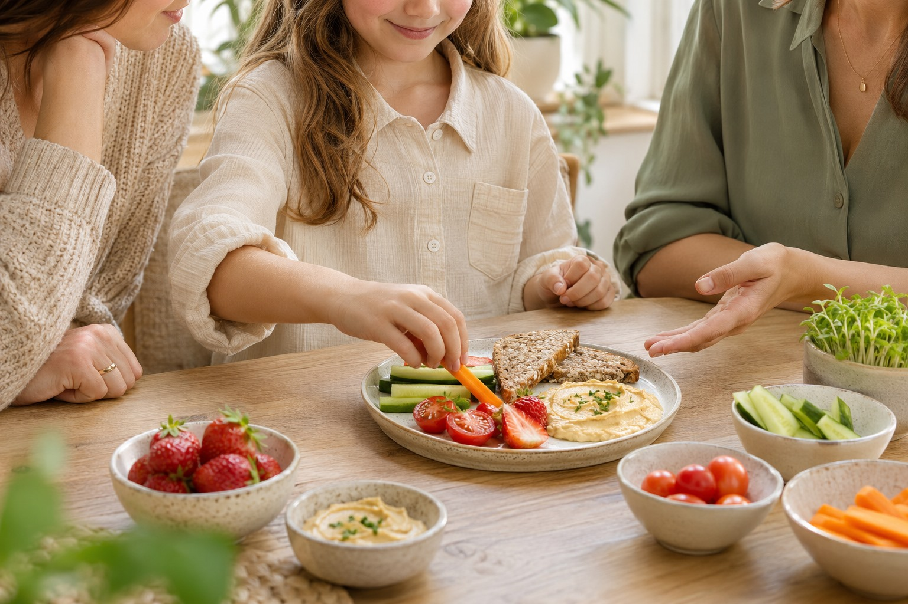

Żywienie dzieci
Żywienie dzieci to troska o rozwój i codzienną relację z jedzeniem. Konsultacja dietetyczna w Fit Kaloria w Łodzi pomaga rodzicom wprowadzać praktyczne zmiany, które pasują do całej rodziny.
Zapytaj o konsultację
Kiedy warto porozmawiać
Dla rodziców, którzy chcą zadbać o różnorodność posiłków dziecka, uporządkować rodzinne nawyki albo omówić potrzeby związane z masą ciała czy stanem zdrowia. Zakres wsparcia jest dobierany do wieku i sytuacji dziecka.
Jak możemy pracować
Podczas rozmowy Karolina poznaje rytm dnia, preferencje smakowe i dotychczasowy sposób odżywiania dziecka. Wspólnie z rodzicem ustala możliwe do wprowadzenia zmiany i wyjaśnia zalecenia w przystępny sposób. Ważne są edukacja, regularna współpraca i stopniowe budowanie dobrych nawyków.
- Zalecenia uwzględniające wiek i potrzeby rozwojowe
- Praktyczna edukacja i wsparcie rodziców
- Posiłki dopasowane do codzienności rodziny
Twój pierwszy krok
Opowiedz, w jakim wieku jest Twoje dziecko i czego oczekujesz od spotkania. Karolina pomoże ustalić zakres konsultacji oraz sposób przygotowania do pierwszej wizyty.
Ustalmy szczegóły
Porozmawiajmy
o współpracy
Wybierz temat i zostaw kontakt do siebie. Wyślij wiadomość bezpośrednio do poradni.
Wolisz zadzwonić? 501 092 308